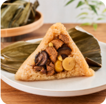
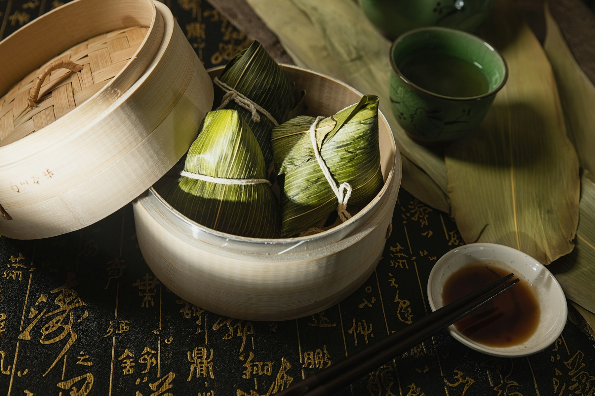
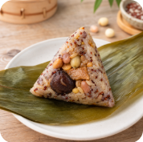
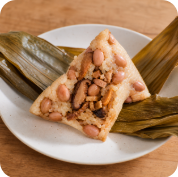
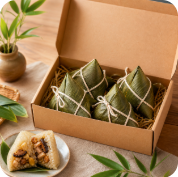

招牌
香菇栗子素肉粽
豆製素肉、厚香菇、栗子、花生與台灣糯米，滷香濃但不油膩。
- 素別
- 全素，無蛋奶
- 五辛
- 可客製無五辛
- 過敏原
- 含大豆、花生、麩質
- 重量
- 180g/顆
- 保存
- 冷凍 -18°C，建議 30 天內食用
- 加熱
- 電鍋 1.5 杯水蒸熟，悶 10 分鐘
NT$88

素食者最在意的事，我們先寫清楚
Menu
參考台灣素粽市場的價格帶，做出專賣店該有的飽足感、清楚素別與穩定回購選擇。

豆製素肉、厚香菇、栗子、花生與台灣糯米，滷香濃但不油膩。

紅藜、糙米、糯米與菇香素肉，口感有嚼勁，適合想吃清爽的人。

南部水煮口感，糯米與花生簡單耐吃，可搭配花生粉與醬油膏。

三款口味各 2 顆，附加熱卡與祝福小卡，適合端午、團購與企業贈禮。
Why Us
素肉粽要好吃，關鍵不是模仿肉，而是把香氣、口感與飽足感重新組起來。
使用豆製素肉與香菇雙層口感，讓每一口都有鹹香與彈性。
全素、五辛、過敏原、重量、保存與加熱方式都在商品頁明列。
不只端午檔期，平日早餐、初一十五、家庭備餐都能冷凍宅配。
Order
填好數量後，系統會自動估算金額並產生訂單摘要。送出前可先致電門市，由銷售經理協助核對口味、數量、到貨日與企業團購需求。
Contact
歡迎電話預訂、企業團購與端午禮盒洽詢。若有無五辛、過敏原或大量分送需求，建議先與銷售經理確認。
Service
素食者、家庭採買與企業送禮都能在下單前知道規則，不用反覆詢問。
台灣本島冷凍配送，離島與大量分送可先備註需求。到貨後請立即冷凍保存。
客服確認品項、運費與到貨日後再安排付款。企業訂單可開立報價單與分批出貨表。
建議冷凍 30 天內食用完畢。食品售出後若非商品瑕疵或運送失溫，恕不接受退換。
FAQ
四款商品皆為全素、無蛋奶，商品卡已標示五辛、過敏原、重量、保存與加熱方式。
香菇栗子素肉粽可做無五辛版本，需提前預訂。花生菜粽設定為無五辛。
冷凍不需退冰，電鍋外鍋 1.5 杯水蒸熟後再悶 10 分鐘；水煮則滾水後轉中小火 25 至 30 分鐘。
可以。建議 50 盒以上採預購制，可客製卡片、混搭口味與分批出貨。